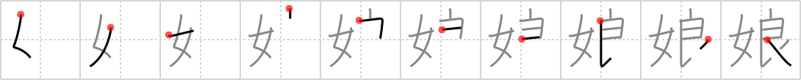

娘
← →
daughter

Reading:
On-Yomi: ジョウ — Kun-Yomi: むすめ、こ
Heisig story:
Woman . . . halo.
Koohii stories:
1) [chamcham] 30-11-2008(180): Your daughter is a good girl……well, let's hope so… :-).
2) [CountPacula] 25-7-2008(80): Be careful not to think woman + angel here, which has already been seen for attractive (#430 嬌). Suggest using woman with a halo, as in an innocent girl, something that everyone sees their daughters as being.
3) [Raichu] 12-7-2006(33): Parents wish that their daughter grows up to be a good woman.
4) [dingomick] 1-3-2007(9): Daddy's little girl (daughter) is an angel!
5) [terozen] 25-3-2012(7): A woman with a halo, that's what your daughter seems like while she's growing up. But you have no idea ;).